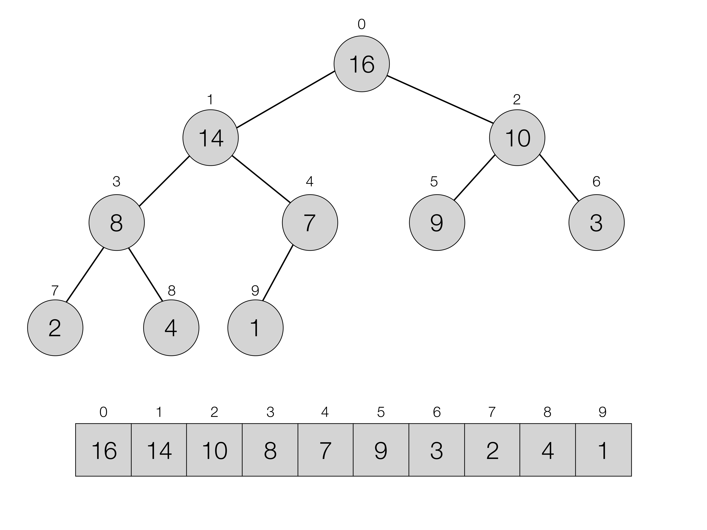

5.4. Binary Heaps¶
- File:
Heaps.ml
5.4.1. Finding a maximum in a changing array¶
We have started this course from a simple exercise — finding a minimal element in a list. While simple enough (and possible to implement in \(O(n)\) operations) for a case when we need to find just one minimum just once, this operations quickly becomes tedious, if we require a second (and a third…) minimum. To solve this problem we have studied various ways to sort lists, and then arrays, culminating in a family of linearithmic (i.e., having complexity \(O(n \log n)\)) algorithms — merge sort and QuickSort. It is indeed very simple to find the first and the second minimum (or a maximum) of a sorted array, but only under a condition that the array, since it has been sorted, never changes.
But what if we keep updating the array, as we want to retrieve the minimal elements? This problem is easy to motivate from a pragmatic point of view. Imagine that the array contains the identifiers of applications currently active on your phone, and some of them need to be given extra priority when distributed the phone processor time. We can then store the identifiers of the applications (“Maps”, “Chrome”, “CandyCrushSaga”, etc) in an array, along with their priorities, which can be treated as keys in the following key-value array:
[| (10, "Maps"), (5, "Chrome"), (1, "CandyCrushSaga") |]
This way, a scheduler — a special process that decides which application will have to run next for a short pereiod of time, can just pick the one with the highest priority and give it processor time.
Now assume that we close the Maps app (which had the largest priority), and then open them again. There is a chance that, in the array of active applications (which has a way smaller size than the overall space of app identifiers), Maps will no longer be the first (imagine that it just replaced some other recently closed application), i.e., its position in the altered array will not reflect its priority. Thefore, in order to restore the app priorities, we will have to sort the array every time some changes in its contents take place, thus, spending \(O(n \log n)\) operations.
5.4.2. Definition of a binary heap¶
This week we will learn how to solve the problem of retrieving the element with the biggest/smallest key from a constantly changing array in a more cheaper way than by sorting the array of elements every time. The key to a better solution is one of the most basic data structures, based on arrays, — binary heaps. A binary heap is a special representation of an array of elements holding some keys, which allows to read off a tree structure from it and retrieve the minimal or the maximal element efficiently.
An example of a tree, represented by a heap (i.e., a specially arranged) array is shown on the image below. The root of the tree (i.e., the top-most node) holds the element with the largest key. Its two children, left and right, hold elements with smaller or equal keys. This order repeats top-down: for each node of a tree, its children hold keys that are not greater.
{kind=link}
The bottom part of the page is shown how the binary heap structure is packed into an array. If the indexing of an array was starting from 1, then for a node stored in an array with an index \(i\), its children would be positioned at locations with indices \(2i\) (left) and \(2i + 1\) (right). However, due to the fact that in OCaml (and also in C# and Java) arrays start from 0, not 1, we will have to use the different formula, reflected from in the definition below:
Definition
A binary heap is an array, such that for every element \(e_p\) (referred to as parent) with a key \(k\) stored in it with an index \(i\), the two elements, \(e_l\) (left child) and \(e_r\) (right child) stored with indices \(2(i + 1) - 1\) and \(2(i + 1)\) correspondingly, are such that their keys are smaller or equal than \(k\) [1].
Notice that, due to its representation, a binary heep, as a tree is almost complete: some of the bottom-level right-most nodes (leaves) might be missing, but the nodes on all other levels are present [2]. Naturally, for a node with an index \(i > 0\), its parent can be obtained by taking an index \((i + 1) / 2 - 1\)
Let us now define a module that encapsulates all operations with binary heaps (represented via arrays), of which so far know three: finding a parent, a left and a right child of a node:
module Heaps (C : CompareAndPrint) = struct
include C
include ArrayPrinter(C)
(* 1. Main heap operations *)
let parent arr i =
if i = 0
then (0, arr.(i))
else
let j = (i + 1) / 2 - 1 in
(j, arr.(j))
let left arr i =
let len = Array.length arr in
let j = 2 * (i + 1) - 1 in
if j < len
then Some (j, arr.(j))
else None
let right arr i =
let len = Array.length arr in
let j = 2 * (i + 1) in
if j < len
then Some (j, arr.(j))
else None
(* More definitions to come here... *)
end
Notice that for a given index there might be no child, hence both left and right return an option type. We can instantiate the functor above to work with our familiar arrays of key-value pairs by supplying the following instance of CompareAndPrint parameter:
module KV = struct
type t = int * string
let comp = key_order_asc
let pp (k, v) = Printf.sprintf "(%d, %s)" k v
end
module KVHeaps = Heaps(KV)
Let us now create our first binary heap and make sure that it follows the intution from the image above:
let good_heap =
[|(16, "a");
(14, "b");
(10, "c");
(8, "d");
(7, "e");
(9, "f");
(3, "g");
(2, "h");
(4, "i");
(1, "j");|]
We can do so by querying its contents:
# open KVHeaps;;
# right good_heap 0;;
- : (int * (int * string)) option = Some (2, (10, "c"))
# left good_heap 1;;
- : (int * (int * string)) option = Some (3, (8, "d"))
# right good_heap 1;;
- : (int * (int * string)) option = Some (4, (7, "e"))
# left good_heap 2;;
- : (int * (int * string)) option = Some (5, (9, "f"))
# right good_heap 2;;
- : (int * (int * string)) option = Some (6, (3, "g"))
# parent good_heap 9;;
- : int * (int * string) = (4, (7, "e"))
# parent good_heap 4;;
- : int * (int * string) = (1, (14, "b"))
# parent good_heap 1;;
- : int * (int * string) = (0, (16, "a"))
Notice that, while not sorted (in an ascending or a descending order), the heap (as per its definition) always has the element with the greatest key at the position 0 of the array.
Definition
A heap defined as per the definition above (a parent is larger than children) is called max-heap. A heap, defined via the property (a parent is smaller than children) is called min-heap.
5.4.3. Checking that an array is a heap¶
Next, we shall write a function that, taking an array, will determine whether it does have heap structure or not. The following definition should be placed within the body of Heap functor:
(* 2. Testing whether something is a heap *)
let is_heap arr =
let open Printf in
let len = Array.length arr - 1 in
let res = ref true in
let i = ref 0 in
while !i <= len / 2 - 1 && !res do
let this = arr.(!i) in
let l = left arr !i in
let r = right arr !i in
let is_left = l = None ||
comp this (snd (get_exn l)) >= 0 in
let is_right = r = None ||
comp this (snd (get_exn r)) >= 0 in
res := !res && is_left && is_right;
i := !i + 1
done;
!res
The main machinery of is_heap applies the definition given above, in a while-loop for each element of the array arr, relying on the comparator comp. Notice that the first loop condition !i <= len / 2 - 1 makes it iterate only until the middle of the array. In fact, one does not need to check the second half of the array, as it only contains leaves (i.e., tree nodes with no children). This is a rather curious fact that is explained by the exponential nature of the binary tree growth: in a complete tree, half of all its nodes are leaves, and, thus, in a binary heap, only the first half of an array corresponds to nodes that might have children (but do not have to, as on the image above).
We can now check that our array is indeed a heap:
# KVHeaps.is_heap good_heap;;
- : bool = true
Let us not create an array, which is not a heap (by the way, why it isn’t — please explain!):
let bad_heap =
[|(16, "a");
(14, "b");
(9, "c");
(8, "d");
(7, "e");
(11, "f");
(3, "g");
(2, "h");
(4, "i");
(1, "j");
(1, "k");
(10, "l");
(6, "m");
To make the checking more informative, let us introduce another version of the heap checker to the Heap functor:
let is_heap_print ?(print = false) arr =
let len = Array.length arr - 1 in
let res = ref true in
let i = ref 0 in
while !i <= len / 2 - 1 && !res do
let this = arr.(!i) in
let l = left arr !i in
let r = right arr !i in
let is_left = l = None ||
comp this (snd (get_exn l)) >= 0 in
let is_right = r = None ||
comp this (snd (get_exn r)) >= 0 in
res := !res && is_left && is_right;
(if (not !res && print) then (
let (li, ll) = get_exn l in
let (ri, rr) = get_exn r in
printf "Out-of-order elements:\n";
printf "Parent: (%d, %s)\n" !i (pp this);
printf "Left: (%d, %s)\n" li (pp ll);
printf "Right: (%d, %s)\n" ri (pp rr)
));
i := !i + 1
done;
!res
This checker features an optional named boolean parameter print
(which by default is taken to be false) that can be omitted. This
parameter determines whether the debug output has to be switched on.
If it is the case and at a certain point the heap-y property breaks,
an offending tiple of a parent and two children will be printed out
(notice again that a named parameter is called with a tilde, i.e.,
~print):
# KVHeaps.is_heap_print ~print:true bad_heap;;
Out-of-order elements:
Parent: (2, (10, c))
Left: (5, (11, f))
Right: (6, (3, g))
- : bool = false
| [1] | You can remember the way children are defined for 0-based arrays using the following intuition: shift the current index + 1 to obtain the index as in 1-based array, compute the child index, and then subtract 1, to return back to 0-based indexing. |
| [2] | The term “heap” has been originally used to denote “almost-complete binary tree”, but now is also used to refer to “garbage-collected runtime memory”, such as provided by Java and C#. There is no relation between these two notions, and here and further by heaps we will mean binary trees. |